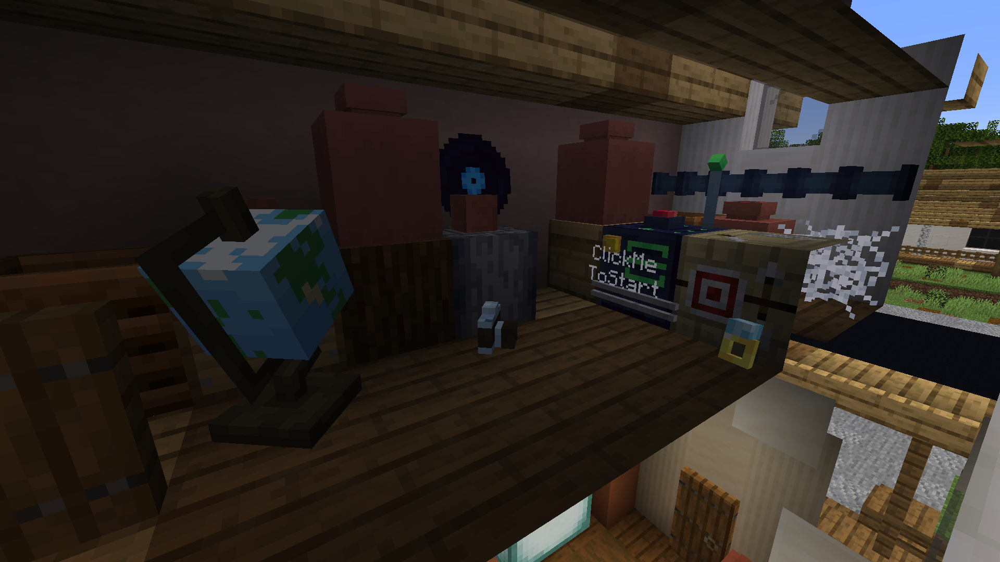
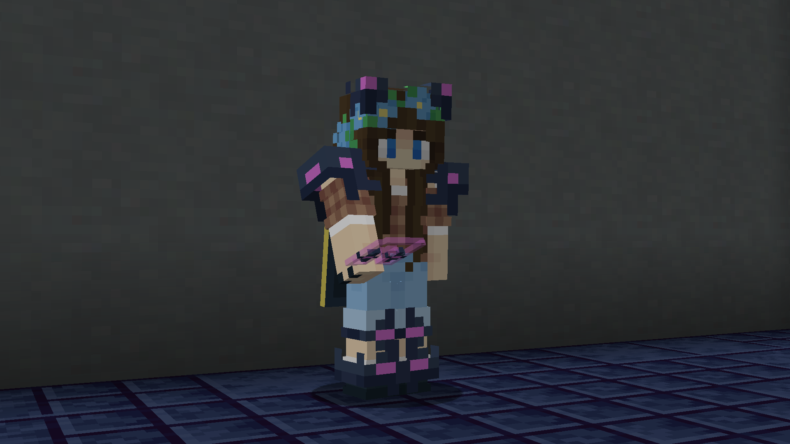
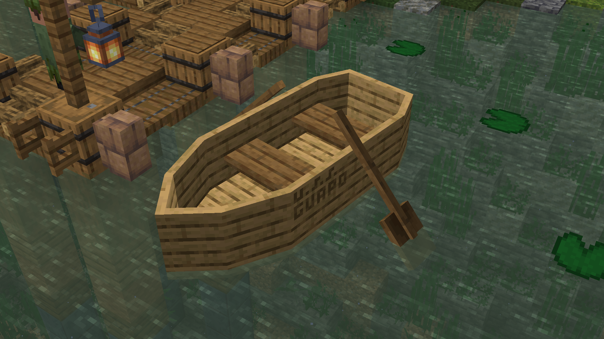

Frozen Crag 2: Frostbite Frenzy is a map I worked on with the Quillmark team, released on Minecraft Realms and Planet Minecraft. My roles on the project were 3D modeling, programming, and building.
Miscellaneous Construction Props
Map Configuration Menus
Lobby Player Models for Map Credits
Another Credit Example
Animated Item Box
Mystery Box
Music Selection Phonograph
TTIAGTTAAAASAHTCMSATGH:AAAA
This map, also known as That Time I Accidentally Got Transported to an Actual Abandoned Alien Ship and Had to Collect My Stolen Antiques to Get Home: An Astronomical Antiques Adventure, is a roguelike map I made in three days with two other members of Quillmark for the Realms 10 Year Anniversary Mapjam. It recieved Fourth place from the judges and Second place from the community vote. My roles on this map were 3D modeling and pixel art.

Pre-Lobby Attic Area
Lobby Spawnpoint
Lobby Credits Room
Puzzle Room
Keycard Dispenser
Keycard Reader
Every Discoverable "Antique" Item
Weak Armor

Strong Armor
Retextured Mobs
Randomly Generating Props
Other Models
These are models I made for smaller projects, unreleased maps, or another place where a custom model could be used.

Boat Made for the Minecraft Realms 10 Year Anniversary Map